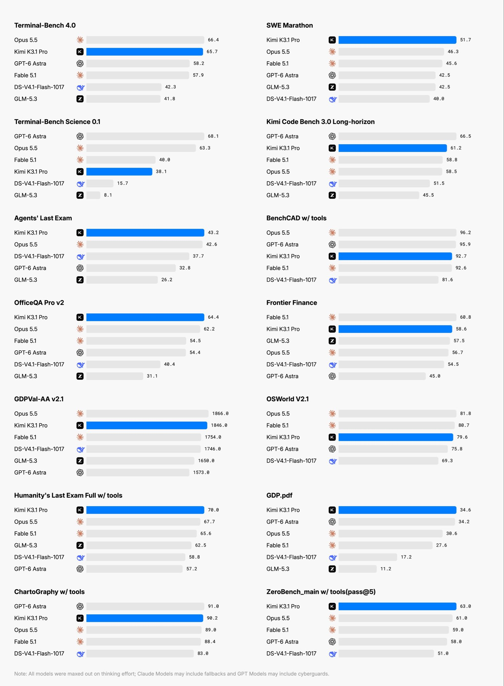

Kimi K3에다 RL, 강화학습만 더해서 나온 모델인데 성능 확 좋아짐.
일부 벤치마크에서는 Astra, Opus 5.5 같은 최고 성능 모델들도 이김.
100만 토큰당 입력 $2, 출력 $10이라 Opus 5.5 반값 정도 밖에 안 함.
어떤 강화학습을 한 걸까...?
앤스로픽이 증류 99퍼센트 막을 수 있다고 발표한지 얼마나 됐다고 이런 일이...
증류도 실력이다.
우리나라 회사들도 중국처럼 증류 각 잡고 해서 쓸만한 모델 좀 만들어다오.
클로드 3만원짜리 쓰는데 사용량땜에 하나 더 써볼거찾고있는데 키미도 한번 써봐야겠네